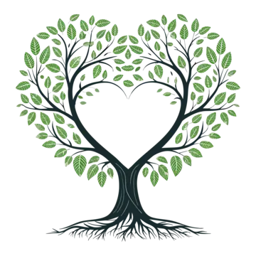

The Shifting Quadrants

Each elemental capacity can also be experienced through Pleasure and Pain, Light and Shadow.
These aren't judgements.
Pain isn't failure.
Pleasure isn't automatically good.
Light isn't perfection.
Shadow isn't badness.
They are shifting dimensions of experience.
Something can feel pleasurable and still be unhelpful.
Something can be painful and still be deeply meaningful.
We may move between quadrants within a single experience — sometimes without even noticing.
The question isn't:
“Which quadrant am I in?”
It is:
“What is happening here, and how am I relating to myself within it?”
This is where the framework becomes practice.
We notice.
We listen.
We discern.
We respond.
We learn.
And then we notice again.
There is no final state to arrive at.
Whole Being is not about becoming someone else.
It is about becoming increasingly capable of inhabiting your own experience of life — with greater awareness, choice, relationship and freedom.
Twelve capacities. Infinite ways to be human.
Come As You Are, Leave Whole
The Inner Arc
Twelve capacities. One whole being.
I can land. I can hold.
Embodiment, stability, presence and the capacity to stay with what is here.
I can discern. I can decide.
Clarity, boundaries, choice and learning to distinguish what is happening from the stories we create about it.
I can feel. I can flow.
Emotion, movement, change and the capacity to experience without needing to immediately fix or control.
I can receive. I can listen.
Receptivity, intuition, sensation and the willingness to hear what is already being communicated.
Together, these explore impression — what enters us, how we experience it, and the meaning it begins to take.
The Outer Arc
I can grow. I can relinquish.
Development, movement and the willingness to release what no longer supports where we are going.
I can change. I can desire.
Vitality, passion, transformation and our capacity to want, create and participate fully in life.
I can move. I can let go.
Thought, perspective, communication and the freedom to allow ideas and interpretations to change.
I can act. I can influence.
Expression, agency, boundaries and our ability to bring something into the world through action.
Together, these explore expression — what leaves us, what we create from our experience, and how we participate in the world.
Beyond the Personal
I can remember. I can align.
The question of what feels deeply and personally meaningful — and what allows us to belong in our own lives.
I can not know. I can trust.
The space beyond certainty. An invitation to remain open to mystery without needing to possess an answer.
I can integrate. I can make whole.
The capacity to hold complexity, contradiction and change without needing to divide ourselves against ourselves.
There is room for everything.
The unformed potential that allows experience, meaning and possibility to arise.
The unformed potential that allows experience, meaning and possibility to arise.
Come as you are,
Leave whole.
Explore Courses
Get in touch
Katie Rigby
Email: wholebeing@mail.com
mobile: 07907128695
address: Pheasey area B43